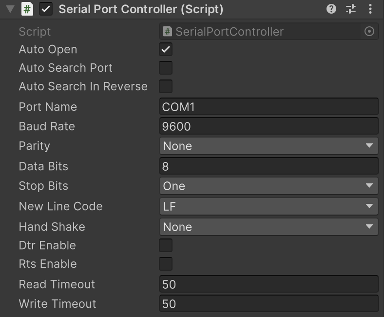

SerialPortController
シリアル通信の送受信を行います。
Important
利用する場合は PlayerSettings の ApiCompatibilityLevel を .NET Framework に変更します。
namespace GarageKit
public class SerialPortController : MonoBehaviour
Inheritance
SerialPortController -> MonoBehaviour
Inspector
Properties
| member | type | description |
|---|---|---|
| autoOpen | bool | ポートを自動で開く |
| autoSearchPort | bool | 利用可能ポートの自動検索 |
| autoSearchInReverse | bool | 利用可能ポートの自動逆方向検索 |
| portName | List |
ポート名 |
シリアル接続パラメータ
| member | type | description |
|---|---|---|
| baudRate | int | BaudRate |
| parity | Parity | Parity |
| dataBits | int | DataBits |
| stopBits | StopBits | StopBits |
| encoding | Encoding | テキストエンコード |
| newLineCode | NewLineCode | 改行コード |
| handShake | Handshake | Handshake |
| dtrEnable | bool | DtrEnable |
| rtsEnable | bool | RtsEnable |
| readTimeout | int | ReadTimeout |
| writeTimeout | int | WriteTimeout |
Enums
NewLineCode
| enums | description |
|---|---|
| LF | \n |
| CR | \r |
| CRLF | \r\n |
Methods
データ受信コールバック
public Action<string> OnReceive
最新の受信文字列
public string ReceivedDataStr { get; }
ポート状態確認
public bool IsOpen { get;}
ポートを検索して開く
public bool TryRecursiveOpen()
ポートを開く
public void Open()
ポートを閉じる
public void Close()
文字列を送信
public void SendCommand(string str)
文字列を非同期送信
public async UniTask SendCommandAsync(string str)
文字列をバイトデータに変換して送信
public void SendCommandByte(string str)
文字列をバイトデータに変換して非同期送信
public async UniTask SendCommandByteAsync(string str)
スペース区切りの数字のコマンド配列を16進数に変換して送信
public void SendCommandArrayHexByte(string str)
スペース区切りの数字のコマンド配列を16進数に変換して非同期送信
public async UniTask SendCommandArrayHexByteAsync(string str)
バイトデータを送信
public void SendByte(byte[] strBytes)
バイトデータを非同期送信
public async UniTask SendByteAsync(byte[] strBytes)